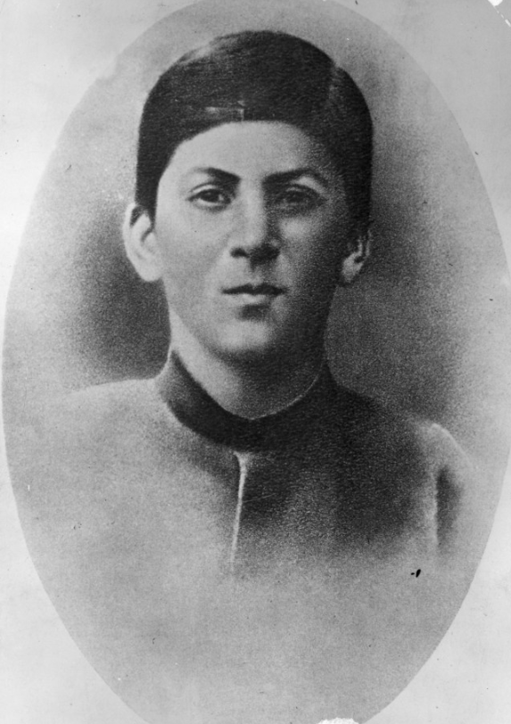
Детство и происхождение
Иосиф Джугашвили родился 6 декабря 1878 года в грузинском городе Гори в семье сапожника. Отец Виссарион происходил из крестьян, по профессии был сапожником. Он был подвержен пьянству и приступам ярости, жестоко избивал мать и маленького Иосифа. В один из таких приступов ребёнок попытался защитить мать, бросив в отца нож, и пустился наутёк. Позже Виссарион оставил семью, пытался забрать сына, но мать не отдала. Когда Иосифу было одиннадцать, отец погиб в пьяной драке.
Мать Екатерина происходила из семьи крепостного крестьянина-садовника, работала подёнщицей. Обременённая тяжёлым трудом женщина пуританских нравов, она часто колотила сына, но была безгранично предана ему. Друг детства Сталина вспоминал: «Като окружала Иосифа чрезмерной материнской любовью и, подобно волчице, защищала его от всех и вся. Она изматывала себя работой до изнеможения, чтобы сделать счастливым своего баловня». При этом она была разочарована, что сын не стал священником.
Иосиф был третьим сыном — старшие двое умерли в младенчестве. В детстве его сбил фаэтон — после травмы левая рука не разгибалась до конца в локте и казалась короче правой. Также у него были сросшиеся второй и третий пальцы на левой ноге и лицо в оспинах. Сам он позднее вспоминал, что рос в очень тяжёлой обстановке, но родители обращались с ним неплохо — настоящим испытанием для него стала не семья, а духовная семинария.
Учёба и первые шаги в революции
В 1888 году Сталин поступил в Горийское духовное училище, которое окончил с отличием в 1894 году — его имя занесли на «Золотую доску» училища. В том же году он поступил в Тифлисскую духовную семинарию, которая была не только религиозным, но и одним из лучших учебных заведений Кавказа.
Там он впервые познакомился с марксизмом и в 1898 году вступил в социал-демократическую организацию «Месаме-даси». В семинарии он начал читать запрещённую литературу — Чернышевского, Плеханова, Маркса, за что его неоднократно арестовывали в карцер. В 1899 году его исключили из семинарии за пропаганду марксизма. В юности он писал стихи на грузинском языке — несколько из них даже были опубликованы и включены в школьные хрестоматии.
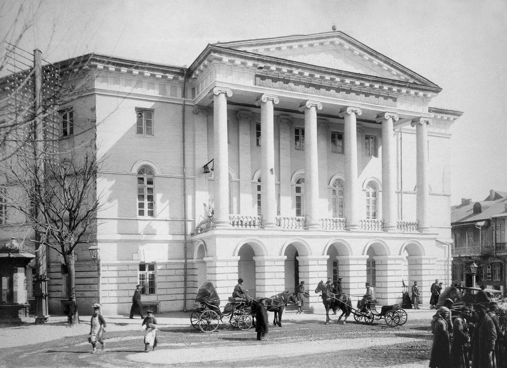
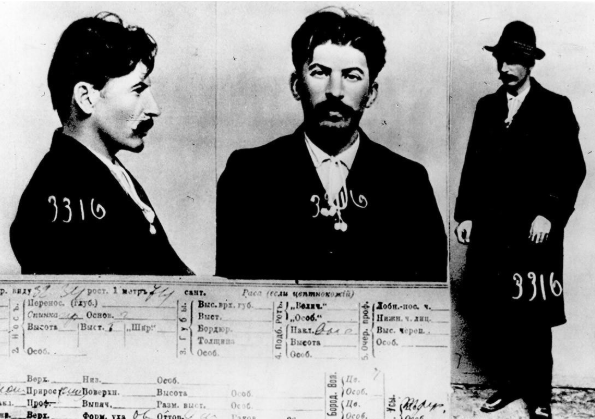
Подпольная деятельность до революции
С 1901 года Сталин перешёл на нелегальное положение, взяв партийную кличку «Коба». Вёл пропаганду среди рабочих Баку, Тифлиса и Батума. В 1903 году примкнул к большевикам. В 1906 году женился на Екатерине Сванидзе — она родила сына Якова, но вскоре умерла от тифа.
В 1907 году участвовал в знаменитой «Тифлисской экспроприации» — вооружённом ограблении казённого экипажа, давшем партии около 250 тысяч рублей. Его неоднократно арестовывали и ссылали, но он постоянно бежал — за 1902–1913 годы совершил 7 побегов. В 1909–1911 годах был в ссылке в Сольвычегодске, в 1912-м — в Нарыме (бежал через 41 день), а в 1913-м его сослали в Туруханский край, где он пробыл до 1917 года в глухой деревне Курейка, занимаясь рыбалкой и охотой. Оттуда он переписывался с Лениным.
В 1912 году он окончательно взял псевдоним «Сталин» (от слова «сталь»), вошёл в состав ЦК и Политбюро, участвовал в создании газеты «Правда», а также руководил выборами в IV Государственную думу. Ленин ценил его за жёсткость и умение решать практические задачи.
Революция 1917 года
В марте 1917 года Сталин вернулся из ссылки в Петроград и вошёл в редколлегию «Правды». После возвращения Ленина полностью поддержал его курс на социалистическую революцию, на VI съезде партии был избран в Политбюро.
Сталин участвовал в подготовке вооружённого восстания. 24 октября (6 ноября) он вместе с Лениным и Троцким координировал действия большевиков. В ночь на 26 октября (8 ноября) участвовал во взятии Зимнего дворца и аресте Временного правительства.
На II Всероссийском съезде Советов Сталин был избран в состав первого Совета народных комиссаров (СНК) на должность народного комиссара по делам национальностей. В этом качестве он готовил «Декларацию прав народов России» и занимался национальным вопросом.
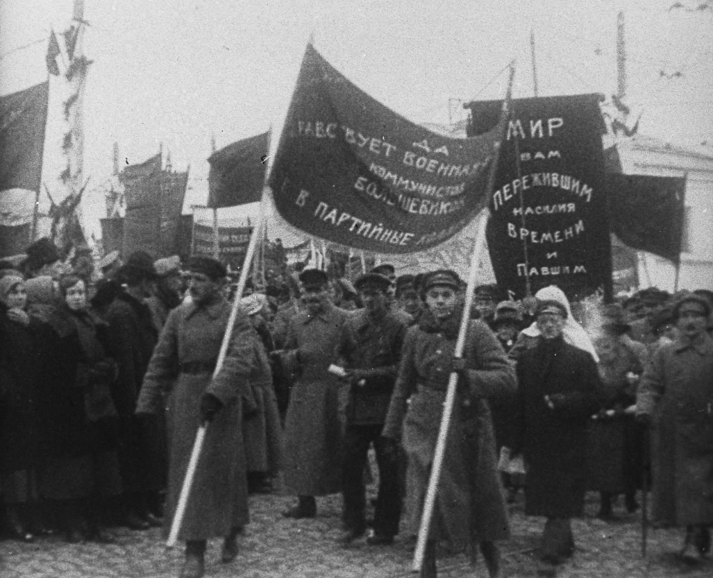
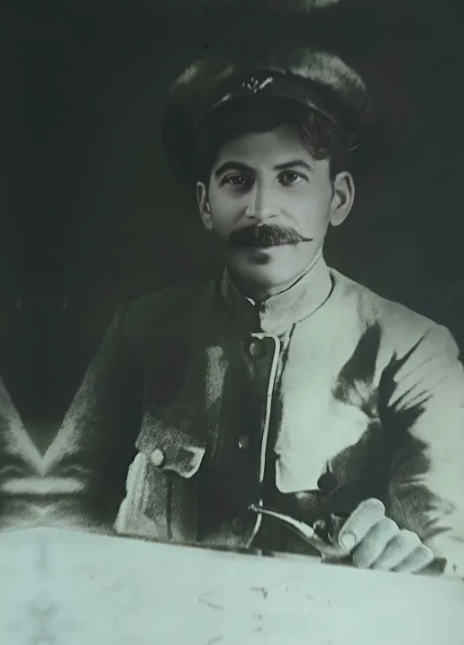
Гражданская война (1918–1922)
В 1918 году Сталин получил назначение чрезвычайным комиссаром по продовольствию на юге России. Он руководил обороной Царицына (позже переименованного в Сталинград), где впервые проявил жёсткость в подавлении оппозиции и конфликтовал с военспецами Троцкого.
В 1919 году он участвовал в обороне Петрограда от войск Юденича. В 1920 году во время советско-польской войны был членом Реввоенсовета Юго-Западного фронта, настаивал на взятии Львова, что позже стало предметом споров.
На VIII съезде партии поддержал Ленина против «военной оппозиции». К концу войны занял посты наркома госконтроля (позже Рабоче-крестьянской инспекции) и члена Оргбюро ЦК.
Борьба за власть (1922–1927)
В апреле 1922 года Сталин был избран Генеральным секретарём ЦК РКП(б) — пост, который тогда считался техническим, но давал контроль над партийными кадрами.
В мае 1922 года Ленин перенёс первый инсульт. В своём «Письме к съезду» он предложил сместить Сталина с поста генсека, характеризуя его как грубого и нелояльного. Однако письмо не было оглашено публично.
После смерти Ленина в 1924 году Сталин использовал пост генсека для укрепления власти. Он сформировал «тройку» с Зиновьевым и Каменевым против Троцкого, а затем разгромил и своих бывших союзников. К 1927 году Сталин стал единоличным лидером партии, избавившись от всех оппонентов: Троцкого, Зиновьева, Каменева, Бухарина и Рыкова.
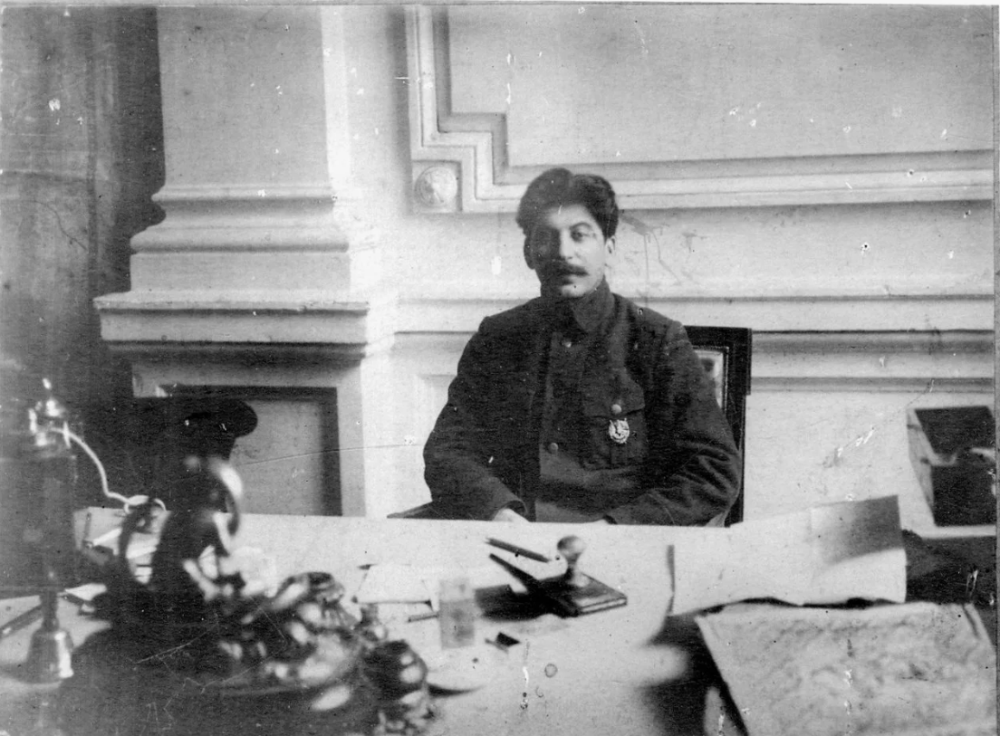
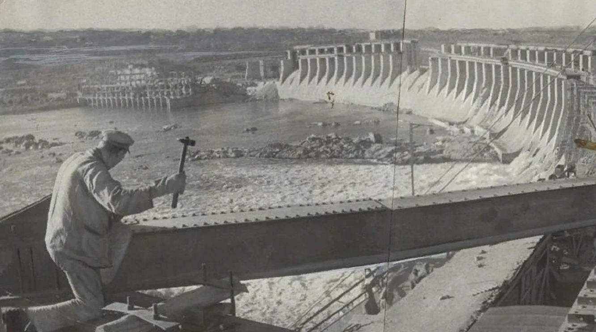
Индустриализация и коллективизация (1928–1932)
Сталин провозгласил курс на «великий перелом» — форсированную индустриализацию и коллективизацию сельского хозяйства.
Были запущены первые пятилетние планы. Строились гиганты индустрии: Магнитка, Днепрогэс, Турксиб, Сталинградский тракторный завод. По официальной пропаганде, СССР превращался из аграрной страны в индустриальную державу.
Коллективизация сопровождалась раскулачиванием, насильственным изъятием хлеба, голодом 1932–1933 годов (особенно на Украине, Кубани, Поволжье), унёсшим миллионы жизней.
Большой террор (1934–1938)
После убийства Кирова в 1934 году Сталин развернул массовые репрессии. Пиком стали 1937–1938 годы, известные как «Большой террор».
Были расстреляны или отправлены в лагеря сотни тысяч «врагов народа»: партийная элита, военные (дело Тухачевского), интеллигенция, крестьяне, рабочие. Система ГУЛАГа достигла пика наполнения.
В 1936–1938 годах прошли показательные процессы над Зиновьевым, Каменевым, Бухариным, Рыковым и другими «старыми большевиками». Почти все они были приговорены к смертной казни.
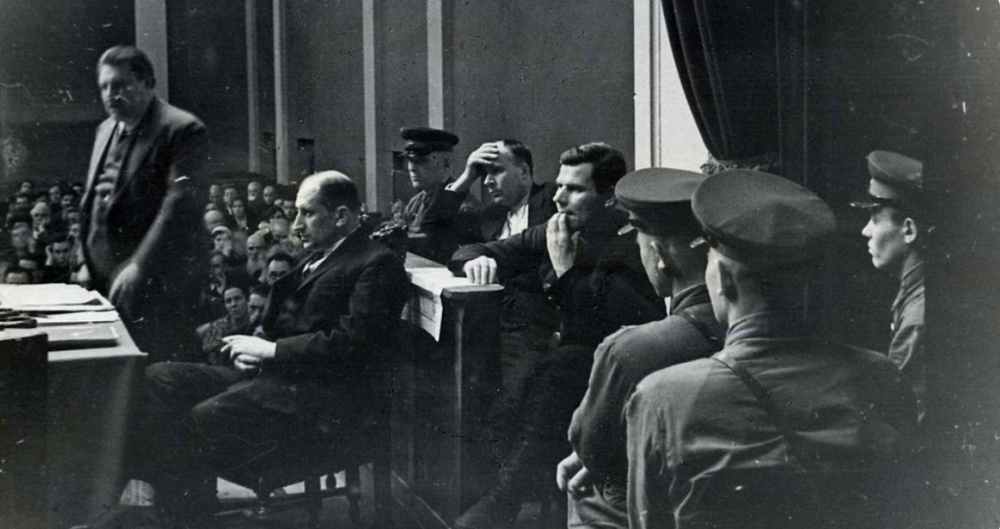
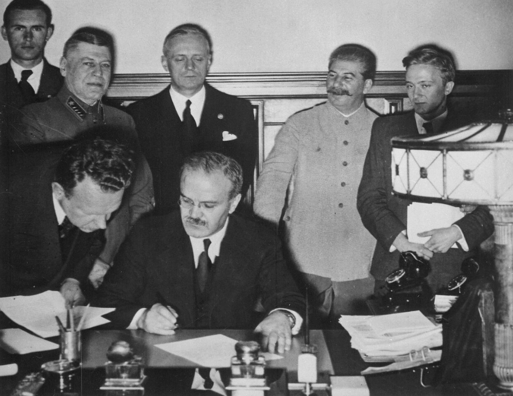
Внешняя политика и Вторая мировая война (1939–1941)
В 1939 году Сталин подписал пакт Молотова–Риббентропа с нацистской Германией и секретные протоколы о разделе сфер влияния в Восточной Европе.
В сентябре 1939 года Красная армия заняла Западную Украину и Западную Белоруссию. В 1940 году были присоединены Прибалтика, Бессарабия и Северная Буковина, а также развязана война с Финляндией.
Сталин готовился к неизбежной войне с Германией, но переоценил значение пакта и проигнорировал многочисленные предупреждения разведки о начале вторжения.
Великая Отечественная война (1941–1945)
22 июня 1941 года Германия напала на СССР. Первые недели Сталин находился в шоке и почти не выступал публично. 3 июля он обратился к народу по радио со словами «Братья и сёстры...».
Сталин занял посты Председателя ГКО, наркома обороны и Верховного главнокомандующего. Он руководил страной через ставку, лично участвовал в планировании операций (иногда ошибочно, как в битве за Москву в 1941-м).
В ходе войны проявил себя как жёсткий организатор, но цена побед была колоссальной: миллионы погибших, пленных, репрессированных народов (чеченцы, крымские татары, калмыки и др. депортированы). Участвовал в конференциях союзников в Тегеране (1943), Ялте (1945) и Потсдаме (1945), где решалось послевоенное устройство мира.
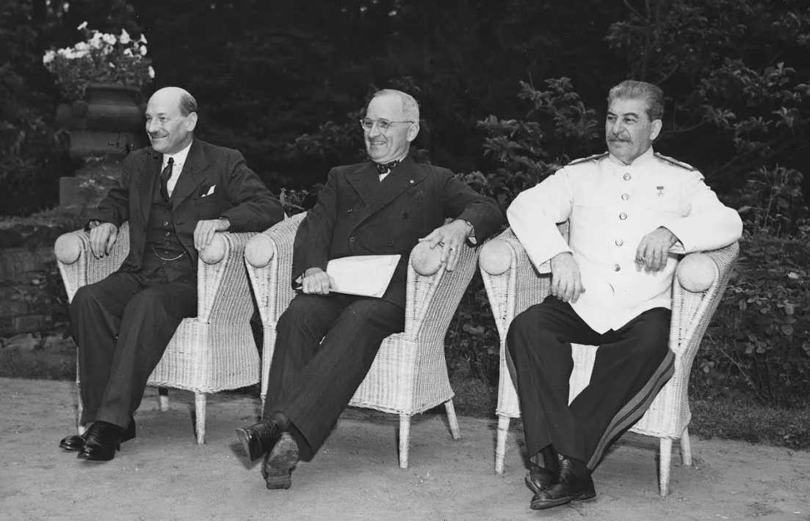
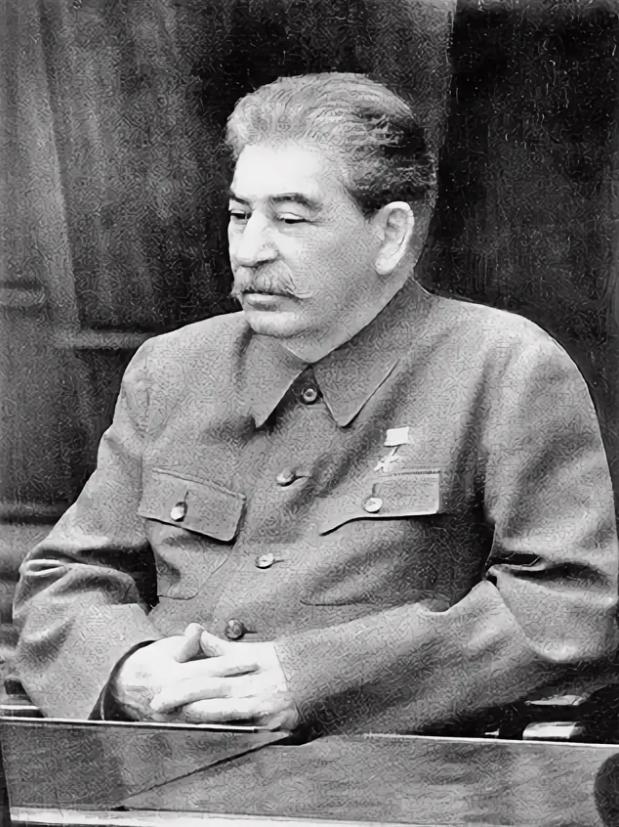
Послевоенные годы (1945–1953)
После войны Сталин руководил восстановлением страны, запуском атомного проекта (бомба испытана в 1949 году), новым витком репрессий («ленинградское дело», «дело врачей», кампания против космополитизма).
Усилилась идеологическая изоляция, борьба с «низкопоклонством перед Западом», прошли новые волны арестов среди партийной и научной элиты.
В 1952 году на XIX съезде партии был формально отстранён от должности генсека, но сохранил реальную власть как председатель Совмина.
Смерть и итоги
5 марта 1953 года Сталин умер на правительственной даче в Кунцево. Официальная версия — кровоизлияние в мозг. Смерть вызвала всенародную скорбь (несмотря на страх) и борьбу за власть в руководстве.
В 1956 году на XX съезде Хрущёв осудил культ личности Сталина в закрытом докладе. В 1961 году тело Сталина вынесли из Мавзолея и захоронили у Кремлёвской стены.
Оценки его правления диаметрально противоположны: от культа «отца народов» и создателя сверхдержавы до обвинений в создании тоталитарной системы, геноциде собственного народа и преступлениях против человечности.
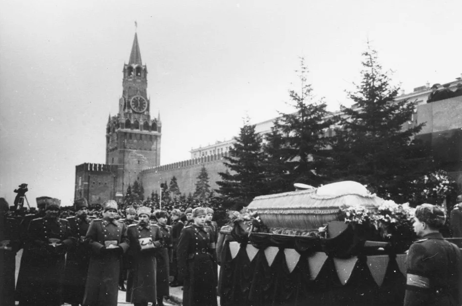